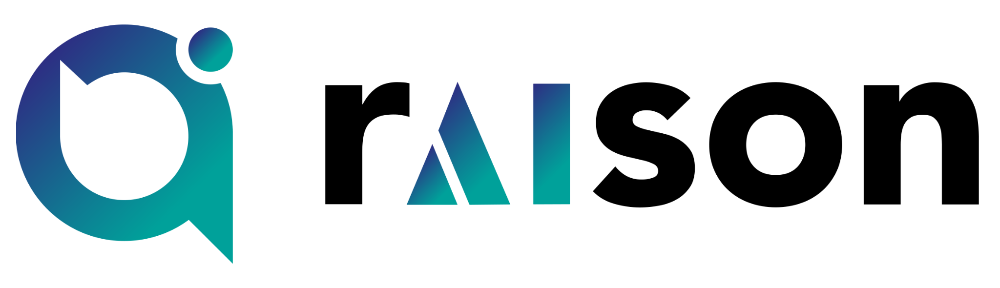

Academic thesis project · Hellenic Mediterranean University
An equation-solving toolbox, with method choice in your hands.
ABESS is a web application for solving equations in one unknown. Users can select a supported method directly or request an automatic recommendation through rAIson, based on the available characteristics of the problem and their preferences.
What can ABESS do?
Manual method selection
Choose from nine supported methods: Bisection, Newton–Raphson, Secant, fzero, ITP, Muller, Symbolic Solve, Polynomial Roots and Integer Exhaustive Scan. For numerical methods, users may enter their own starting values or let ABESS attempt to estimate them automatically.
Automatic / rAIson
Provide relevant criteria about the equation and the desired solution. rAIson recommends a method; the ABESS backend then performs the calculation.
The application also includes:
- Interactive function graphs with pan, zoom and interval-point selection.
- Numerical and, where supported, symbolic solutions.
- Personal solve history for registered users and up to three guest solves.
- REST API access for programmatic equation solving.
How it works
ABESS separates the choice of method from the mathematical computation. In Automatic mode, it uses the external rAIson service to recommend a method; a Python backend evaluates the equation using the implemented numerical or symbolic routines. In Manual mode, the user selects the method without requesting a recommendation.
For supported input notation, method parameters, criteria and API usage, visit the Equation Solver and open its Help panel.
Implementation & technologies
The web application uses a Python backend built with FastAPI. SciPy and SymPy support numerical and symbolic mathematics, while SQLite and SQLAlchemy support application data. The browser interface uses HTML, CSS, JavaScript and Plotly; Docker Compose and Caddy are part of the deployment stack. Automatic method selection communicates with rAIson through its external service/API.
Academic project & thesis
The ABESS web application was designed and implemented as the diploma thesis of Vasileios Tsiotas at the Department of Electronic Engineering, Hellenic Mediterranean University, under the supervision of Assistant Professor Nikolaos Spanoudakis. It implements a web-based equation-solving system drawing on the cited research, while integrating the external rAIson platform for automatic method recommendations.
Thesis publication: A public link can be added here once the thesis is finalized and made available. No thesis DOI or publication is claimed at present.
Scientific foundations
ABESS is a diploma-thesis software project built on previously published research concerning numerical root-finding and argumentation-based method selection.
The publications below provide the scientific foundations, including computational argumentation for automatic recommendations. These theoretical contributions belong to their respective authors.
The contribution of this diploma thesis is the design and implementation of the ABESS web application: manual method selection, recommendations through the external rAIson API, numerical and symbolic equation solving, interactive graphs and supporting application services.
The Network Connectivity, Wireless Sensor Network Coverage and RF Energy Harvesting examples in Help use numerical adaptations of models presented by Mandikas, Liodakis and Spanoudakis (2026).
Scientific publications & references
Published sources supporting the mathematical and argumentation-based approach, followed by publications for the scientific software used in ABESS. All links refer to the original publications; the diploma thesis will be added when it is publicly available.
Root-finding & method-selection research
- Mandikas, V., Liodakis, G. S., & Spanoudakis, N. (2026). Argumentation-based equation-solver selector for energy-efficient WSNs. Algorithms, 19(6), Article 457. https://doi.org/10.3390/a19060457
- Mandikas, V., & Spanoudakis, N. (2025). An effective root-finding toolbox using computational argumentation. In 2025 6th International Conference in Electronic Engineering, Information Technology & Education (EEITE). https://doi.org/10.1109/EEITE65381.2025.11166218
- Moraitis, P., Spanoudakis, N., & Kakas, A. (2026). rAIson: Developing reliable decision-making agents. In Proceedings of the 25th International Conference on Autonomous Agents and Multiagent Systems (pp. 4128–4130). IFAAMAS. https://doi.org/10.65109/CYPN9399
Scientific software: SciPy & SymPy
- Virtanen, P., Gommers, R., Oliphant, T. E., Haberland, M., Reddy, T., Cournapeau, D., … van Mulbregt, P. (2020). SciPy 1.0: Fundamental algorithms for scientific computing in Python. Nature Methods, 17(3), 261–272. https://doi.org/10.1038/s41592-019-0686-2
- Meurer, A., Smith, C. P., Paprocki, M., Čertík, O., Kirpichev, S. B., Rocklin, M., … Scopatz, A. (2017). SymPy: Symbolic computing in Python. PeerJ Computer Science, 3, e103. https://doi.org/10.7717/peerj-cs.103 · View PDF ↗
Powered by rAIson

Automatic method recommendations are powered by rAIson, the computational-argumentation decision platform from Argument Theory ↗. The recommendation service is external to the ABESS Python equation-solving backend.
Contact
For academic questions, feedback or bug reports:
- Contact
- Assistant Professor Nikolaos Spanoudakis
- nspan@hmu.gr
- Telephone
- +30 2821 123086
- Institution
- Department of Electronic Engineering, Hellenic Mediterranean University